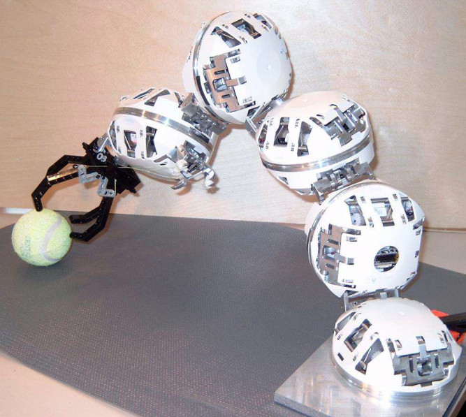
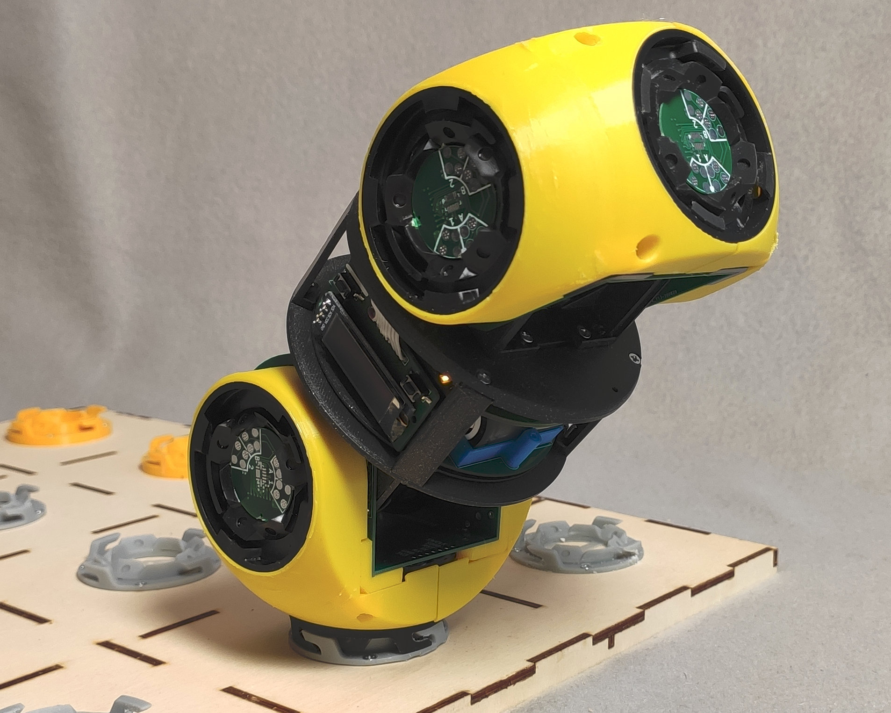
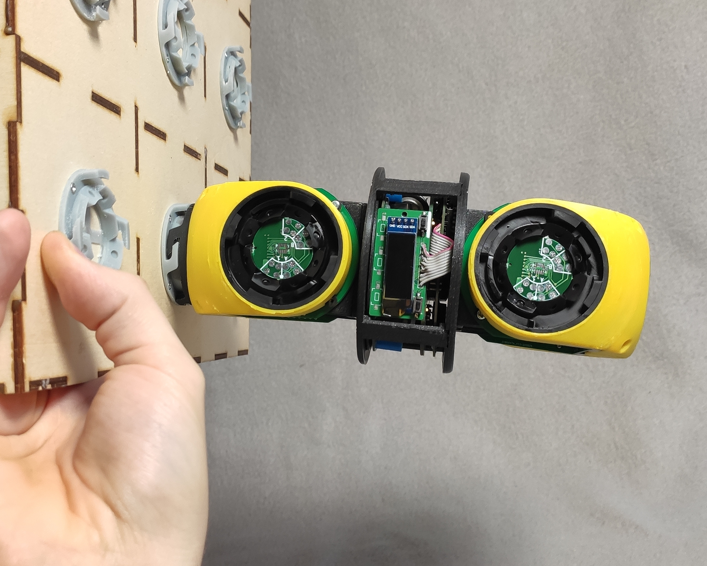
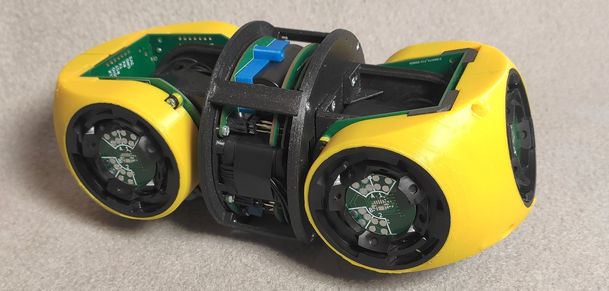

RoFI – Robots at Paraside
Jan Mrázek
December 5, 2022
Modern vs. Post-modern Robotics
More universal, less effort, more emergent behavior
current robotics
post-modern robotics
Hand-crafted robots
/cdn.vox-cdn.com/uploads/chorus_asset/file/19770075/pia23491.jpg)
Modular robots
organs

Metamorphic robots
cells
Smart matter
atoms

What Is The Goal?

...basically replicators from Star Gate: SG-1
Challenges of Metamorphic Robots
What We Focus On
Hardware challenges
- module design & miniaturization
- power source
- bringing cost down & mass-production
Challenges of the distributed nature
- massive communication in unstable topology
- computationally weak modules
- task distribution & cooperation on task solving
Algorithmic challenges
- self-assembly & reconfiguration
- task specification & task formalization ("Bring me a coffee")
"Be ready when the hardware guys finish their job."
Finding Self-assembly Plans
Several approaches:
- state-space search
- leveraging symmetries
- voxel-based reconfiguration (efficient implementation, brute-force)
- inverse-kinematics base
- reduction to SMT
Relation to verification: inspiration by model-checking techniques
Distributed Control
Several topics:
- efficient communication
- routing algorithms & application-based addressing schemes
- fault-tolerance
- distributed firmware update
- distributed computations on resource-limited nodes
- fault-tolerance via distribution
- evolving trust in individual agents
Relation to verification: need to validate protocol properties
RoFI Platform


- develop a robotic platform for result validation & reproduction
- make it open & well-supported so the community can benefit from it
RoFI at Paradise: Summary
- metamorphic self-reconfigurable robots
- self-reconfiguration algorithms
- distributed control
- supported by custom robotic kit
Thank you!
https://ro.fi.muni.cz
